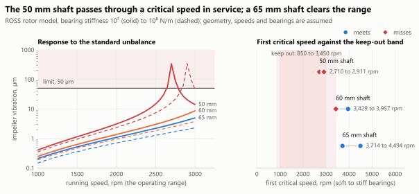
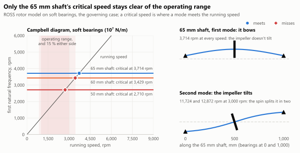
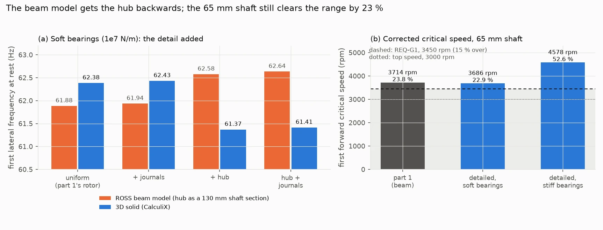
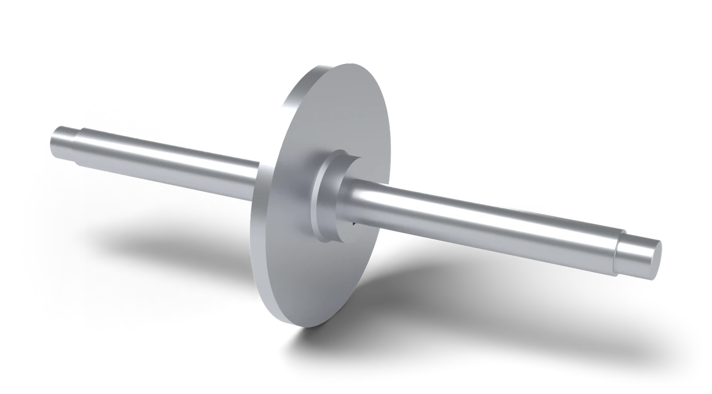
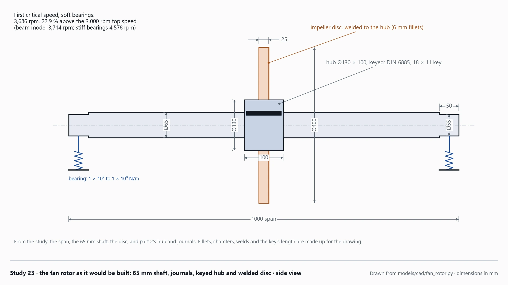

The Question
A fan's impeller, a 400 mm steel disc 25 mm thick, sits in the middle of a steel shaft between two rolling bearings 1 m apart. It runs anywhere from 1,000 to 3,000 rpm on a variable-speed drive. A rotor running near one of its critical speeds vibrates hard, so the requirement, simplified from API 684, is that every forward critical speed sits at least 15 % outside the operating range: none between 850 and 3,450 rpm. The impeller's response to the standard API unbalance must also stay under 50 µm.
The bearing pedestals' stiffness isn't known well, so it's a band, 10⁷ to 10⁸ N/m, and the answer must hold across it. The drawing shows a 50 mm shaft. Is that enough, and if not, what is? The geometry, speeds and bearings are assumed values, stated as such.
The Answer
No: use a 65 mm shaft. The 50 mm shaft's first critical speed, 2,710 to 2,911 rpm across the bearing band, falls inside the operating range, and the impeller swings 335 to 345 µm as it passes through. A 60 mm shaft clears the range on stiff bearings but only by 14.3 % on soft ones, just short of 15 %. At 65 mm the margin is at least 23.8 % anywhere in the band, and the response stays under 5 µm.
The soft end of the bearing band decides it. Softer supports lower every critical speed. The 60 mm shaft would pass on stiff pedestals and fail on soft ones, which is exactly the uncertainty the band is there to cover.
The Model
- Rotor
- Solid steel shaft (205 GPa, 7,850 kg/m³), 1 m between bearings; the impeller a rigid steel disc 400 × 25 mm at mid-span, about 24 kg.
- Bearings
- Two equal linear bearings, 10⁷ and 10⁸ N/m to bracket the unknown pedestals, 500 N s/m of damping each.
- Elements
- 20 Timoshenko beam elements with shear deformation, rotary inertia and gyroscopic coupling, in ROSS 3.1, the open-source rotordynamics library.
- Unbalance
- API 684's standard unbalance, 6350 W / N g·mm with W the rotor mass and N the top speed: 84 to 106 g·mm at the disc.
The case file: recorded assumptions, limits and inputs
This is the study's own record, written before the run and saved with it, in the shorthand of the case file.
Fan rotor critical speeds and unbalance response: steel shaft 50 / 60 / 65 mm, bearing span 1.0 m, 400 x 25 mm steel impeller at mid-span, bearings 1e7 and 1e8 N/m, operating range 1000-3000 rpm; ROSS 3.1 Timoshenko rotor, Campbell diagram to 9000 rpm, critical speeds as the 1x crossings, unbalance response with API 684's unbalance.
Assumptions, and How Each Is Checked
- Solid steel shaft (E 205 GPa, density 7850 kg/m^3, Poisson 0.29), Timoshenko elements with rotary inertia and gyroscopic terms; the impeller a rigid steel disc 400 x 25 mm bored to the shaft, at mid-span. [synthetic geometry]
- Two equal linear isotropic bearings at the shaft ends, stiffness 1e7-1e8 N/m (rolling bearings on pedestals: the band covers the unknown pedestal), damping 500 N s/m each. [synthetic]
- No aerodynamic cross-coupling, no foundation mass, no seal forces; the impeller's overhang and blades are lumped in the disc.
- API 684-style unbalance U = 6350 W / N_max g mm with W the rotor mass (kg), N_max 3000 rpm, at the disc.
Limits
- Separation margin simplified to a fixed 15 %; API 684 sets it from each mode's amplification factor.
- Linear bearings: a rolling bearing's stiffness rises with load and speed; the band is meant to cover that.
Inputs
| Input | Value |
|---|---|
| density_kg_per_m3 | 7850 |
| youngs_modulus_Pa | 2.05e+11 |
| poisson_ratio | 0.29 |
| n_elements | 20 |
| bearing_span_m | 1 |
| shaft_diameter_m | 0.05 |
| disc_width_m | 0.025 |
| disc_diameter_m | 0.4 |
| bearing_stiffness_N_per_m | 1e+08 |
| bearing_damping_Ns_per_m | 500 |
| speed_min_rpm | 1000 |
| speed_max_rpm | 3000 |
| campbell_max_rpm | 9000 |
| campbell_points | 91 |
| modes | 6 |
| response_points | 41 |
Why It Matters
A shaft sized for strength alone can still be unusable if it runs at its own critical speed. Variable-speed drives make this common: a fan that was fine at one fixed speed now sweeps through a range, and any critical speed inside it becomes a place where the machine shakes itself apart. Catching it at the drawing stage costs a shaft diameter; catching it in service costs a rebuild.
How It Works
ROSS builds the rotor from beam elements, the disc and the two bearings. Its Campbell diagram tracks each vibration mode's frequency as the running speed rises, split into forward whirl (the shaft orbits the way it spins) and backward whirl. A critical speed is where a forward-whirl mode crosses the line of once-per-revolution excitation, which is what an unbalance produces. The unbalance response then gives the impeller's actual vibration amplitude at every speed in the range.


How I Checked It
- The Jeffcott rotor. A massless shaft with the disc in the middle on rigid supports, against the closed form √(48EI / mL³): within 0.27 to 0.46 %, the difference being shear deformation and the disc's width.
- The same rotor on the study's bearings, against the closed form with shaft and bearings as springs in series: within 0.24 to 0.44 %.
- The bare shaft on rigid supports, against the Euler-Bernoulli pinned-pinned beam: within 0.30 to 0.50 %.
- Two ways to the critical speed. The Campbell crossings and ROSS's own critical-speed search agree to 6 × 10⁻⁶ or better.
- Element convergence: 10, 20 and 40 elements give the same critical speed and response.
What I Caught Along the Way
- A library search that didn't converge. ROSS's own critical-speed search failed over the full 0 to 9,000 rpm range. The study takes the critical speeds from the Campbell diagram's crossings instead and keeps ROSS's search, over its default range, as a cross-check.
- My hand estimate ran 2 % high on soft bearings. Rayleigh's method, with 17/35 of the shaft's mass at mid-span, matched within 0.2 % on stiff bearings. But that factor assumes the shaft bends as if simply supported; on soft bearings the whole shaft also moves, so more of its mass takes part. That 2 % put the 60 mm shaft just under the limit, outside the range I had predicted for it.
Part 2: The Real Rotor, as a 3D Solid
The answer above rests on a beam model: a uniform shaft, the impeller a rigid disc bored straight onto it, point bearings at the shaft's ends. A real rotor has its impeller on a hub, smaller bearing journals and a disc that isn't rigid. Does the 65 mm recommendation hold for the rotor as it would be built?
Yes: 65 mm holds. With a 130 × 100 mm hub and 55 mm journals, the first critical speed on the soft bearings is 3,686 rpm, 22.9 % above the 3,000 rpm top speed, against the beam model's 23.8 %.
The beam model gets the hub's effect backwards. Adding the hub raises the beam model's first frequency by 1.1 % but lowers the 3D solid's by 1.6 %. A beam model can take a hub two ways, and both are wrong: as a shaft section of the hub's diameter it's 2.0 % too stiff, and as mass alone it's 5.9 % too soft. Only the solid says how much a 100 mm hub on a 65 mm shaft really stiffens it. This rotor has the margin to absorb that; one sized closer to its limit wouldn't.

How I checked it. On the rotor the beam model idealises exactly, the solid is 0.8 % above it at every mesh, inside a 2 % cross-tool check; the check then fails once the hub matters, at 3.1 % on stiff bearings, which is the finding itself. Three meshes agree within 0.03 %, set against effects of 2 to 3 %. The automatic convergence check still failed: the meshes aren't a strict refinement and I hadn't declared a noise floor beforehand, so the failure stands and I report it. Every solid's volume matches a hand calculation.
What I caught. CalculiX silently read a bearing spring with no stiffness until the number carried a decimal point: 50000 failed, 50000. worked. And my predictions had the journals backwards: smaller journals raise the first frequency slightly, because they take mass off where the bending is smallest.


Limits
- Part 2: the hub and journal sizes are made up; the bonded hub is the tight-fit limit, and a loose fit stiffens less still. The solid is at rest, so its correction applies the at-rest ratio to the beam model's critical speed with its spin effects. No keyway in the solid; a tight key restores the section.
- Linear bearings. A rolling bearing's stiffness rises with load and speed; the band is meant to cover that.
- No aerodynamic cross-coupling, foundation mass or seal forces; the blades are lumped into the disc.
- API 684 sets the separation margin from each mode's amplification; a fixed 15 % is a simplification.
Evidence
Run reports, with every check and the saved inputs